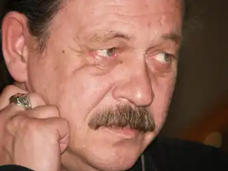
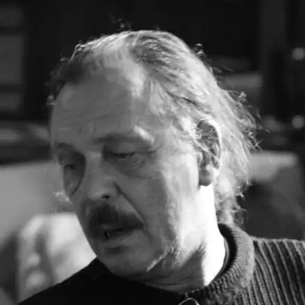

Василь Васильович Портяк (*31 березня 1952, Кривопілля, Верховинський район — †2014 рік, Київ) — український прозаїк і кінодраматург. Член Національної спілки кінематографістів України
Біографія
Василь Портяк народився в мальовничому гуцульському селі Кривопілля, поруч Верховини. Навчався в місцевій школі, пас худобу в полонині, помагав батькам. По закінченні школи пішов на працю: був лісорубом, грузчиком, такелажником. В 1972 році вирішив здійснити свою юначу мрію і подався до Києва, заніс документи до університету. Після здачі екзаменів, ощасливив батьків звісткою, що тепер буде журналістом. В 1877 році закінчив навчання на факультеті журналістики Київського університету імені Т.Г. Шевченка. Після здобуття фаху, подався співпрацювати з кількома газетами, водночас писав своє. В 1980 році світ побачив його творчий первісток —новелу "Мицьо і Вовчук" (у львівському журналі "Жовтень"). Потім він опублікував ще кілька творів у журналах "Вітчизна", "Ранок", "Літературна Україна". Невдовзі, в 1983 році, республіканське видавництво для творчої молоді видало збірку "Крислачі", якою молодий гуцульський автор справив чимале враження на київську творчу складову, і, відтак, був запрошений на роботу редактора у видавництво "Молодь". Паралельно із творчими пошуками в літературі, Василь Портяк захопився кіно, та й київський кінематограф не міг оминути цього колоритного гуцульського хлопця. А він взяв, тай подався аж до Москви, і два роки навчався в майстерні Євгена Барабаша на Вищих курсах режисерів і сценаристів. Закінчивши навчання в 1986 році Василь Портяк повернувся до Києва, і з тих пір постійно працює в кіно. Автор сценаріїв фільмів: • "Меланхолійний вальс" • "Нам дзвони не грали, коли ми вмирали" • "Вишневі ночі" • "Білий пудель" • "Чия правда, чия кривда" • "Нескорений" • "Атентат. Осіннє вбивство в Мюнхені" • "Залізна сотня" На цьому його фільмографія не закінчувалася, адже було ще чимало короткометражних та документальних фільмів. Кінематограф надовго захопив Василя Портяка, і мало часу було на інші творчі експерименти. А до літератури він час від часу навертався. Загалом з під пера Портяка вийшли такі художні твори: • "Крислачі" — збірка новел у видавництві "Молодь" (Київ, 1983); • "Час прощання — час утрати" — оповідання (Київ, 1984); • "Ісход" — публікація в журналі "Кур’єр Кривбасу" (Кривий Ріг, 1995); • "Гуцульський рік" і "У неділю рано" — оповідання у збірці "Десять українських прозаїків" (Київ, 1995); • "У снігах" — збірка з 8 новел (Київ, 2006)